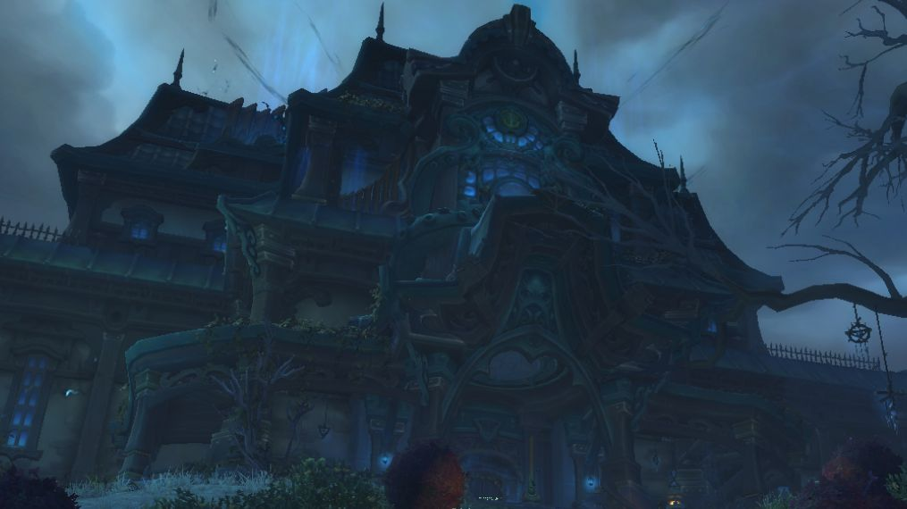

News › Correctifs du 6 novembre
Correctifs du 6 novembre : Maraudon, démoniste et quêtes
7 novembre 2026
Blizzard a déployé une grosse série de correctifs pour WoW Forever. Surtout des bugs de quêtes et de donjons, quelques descriptions de sorts corrigées, et un petit coup de pouce au marcheur du Vide.

Donjons
- Maraudon : l'Esprit de Zaetar apparaît bien après la mort de la princesse Theradras.
- Certaines créatures du Repaire des Noiregueules et de la Cité Submergée ne quittent plus le combat sans raison.
- Le portail d'instance de la Cité Submergée téléporte bien à l'intérieur.
Classes
- Démoniste : le marcheur du Vide gagne environ 40 points de vie de base à tous les niveaux. Siphon d'âme n'augmente plus à tort les dégâts de Calvaire. Tout est sur notre page Familiers du démoniste.
- Mage : Déflagration des arcanes dure bien 18 secondes, et le sort Recherches n'est plus appris puis oublié à la reconnexion.
- Druide : Floraison soigne bien sa cible ; les descriptions de Forme d'ours, Ravage et Prompte guérison sont corrigées (les vraies valeurs ne changent pas).
- Voleur et Guerrier : descriptions de Surin et de Frappes téméraires corrigées.
- Le gestionnaire de temps de recharge affiche toujours la vraie durée des contrôles, même avec les rendements décroissants.
Quêtes
- Le dormeur s'est éveillé : Kerlonian s'endort moins souvent, et tu reçois la Corne de l'éveil dès le départ.
- Il ne faut jamais s'asseoir sur la qualité : plus d'apparitions et d'objets de quête.
- Note humide : elle tombe plus souvent.
- Tourment interminable (Ruines de Lordaeron) : proposée à la Horde dès le niveau 15.
- Corrections aussi pour Vorsha la Flagellante, Redécouverte de la Lumière, Munitions pour Rumbleshot et les objets de quête partagés en groupe dans les Rives Claires.
Monde, objets et métiers
- Les trogs de la carrière de Gol'bolar (Dun Morogh) réapparaissent moins vite.
- Pelluk (Marais des Chagrins) apparaît bien, Krek et les Rôdeuses noirecrête laissent du butin.
- Les plantes de Teldrassil ne sont plus immunisées à la Nature.
- La Dague incendiaire ne se déclenche plus qu'avec des sorts qui font des dégâts.
- Travail du cuir : le Râtelier de tannage demande 125 en compétence au lieu de 140.
- Elfes de la nuit : les druides camouflés n'ont plus accès à Ravage et Traquenard (c'était un bug).
- Les autres joueurs et leurs cibles se voient mieux de loin.
Un nouveau patch (1.60.1.70862) est arrivé le 7 novembre. Il ne change que des descriptions : nos arbres de talents et nos builds sont à jour et toujours valables.
Sources : JudgeHype et notes de Blizzard (6 novembre 2026), foreverchanges.pro pour le patch du 7 novembre.